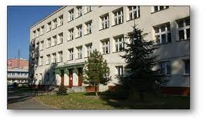

Na kogo głosować
Wybory na przewodniczącego szkoły powoli się zbliżają. Kampania wyborcza już ruszyła i poznaliśmy już większość kandydatów.
Mimo że nie znamy jeszcze daty wyborów, to niektórzy kandydaci przygotowali już swój podstawowy program. Jednym z tych osób jest Krystian
Kurpan.Przedstawił on już część swojego programu. Ale dlaczego na niego głosować, tego dowiesz się poniżej.

Dlaczego akurat on
Brał on udział w różnych akcjach szkolnych i charytatywnych takich jak Caritas
Jest on pracowity i cierpliwy, więc na pewno dotrzyma swojego słowa
Program
Wymiana starych ławek na korytarzu na nowe.
Stworzenie sklepiku z goframi, babeczkami i innymi rzeczami W każdy piątek
-20% na gofry i babeczki i wiele innych rzeczy